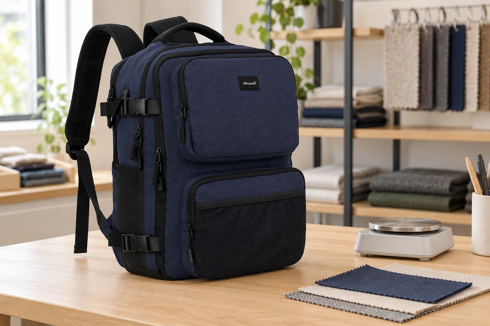
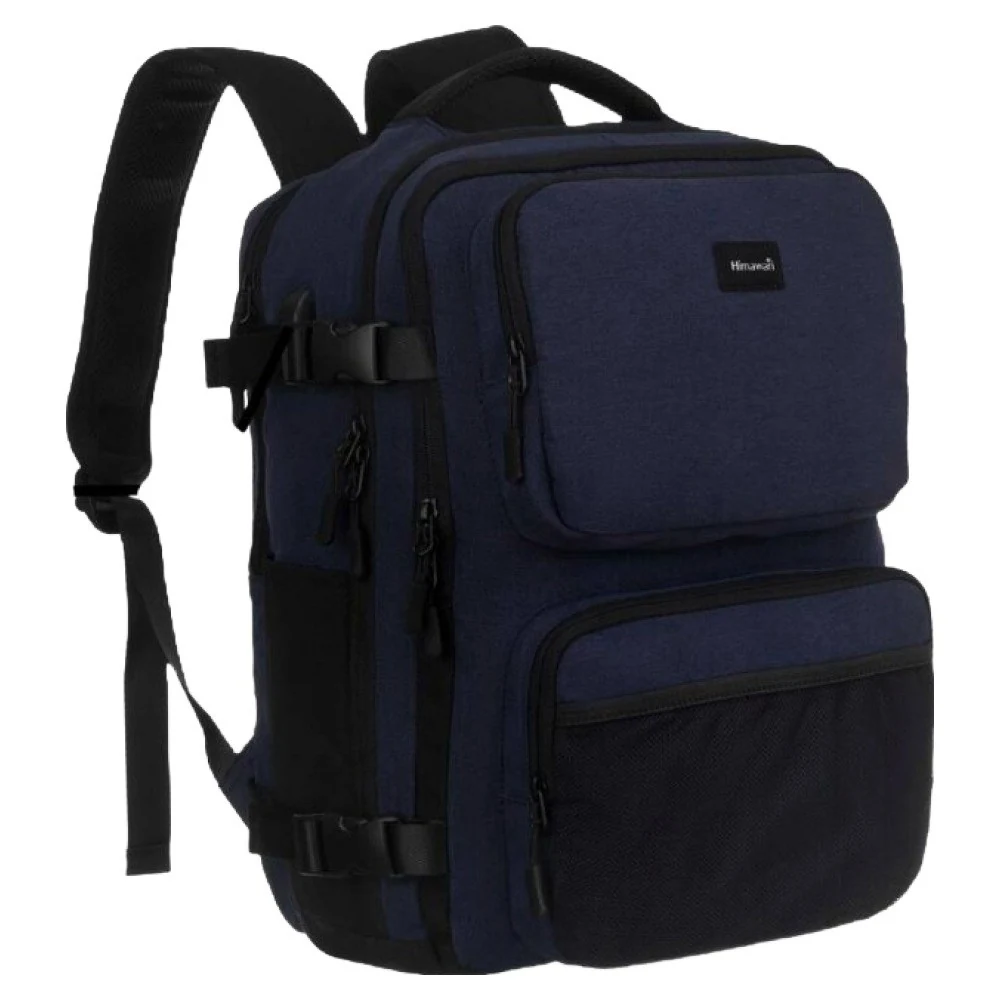
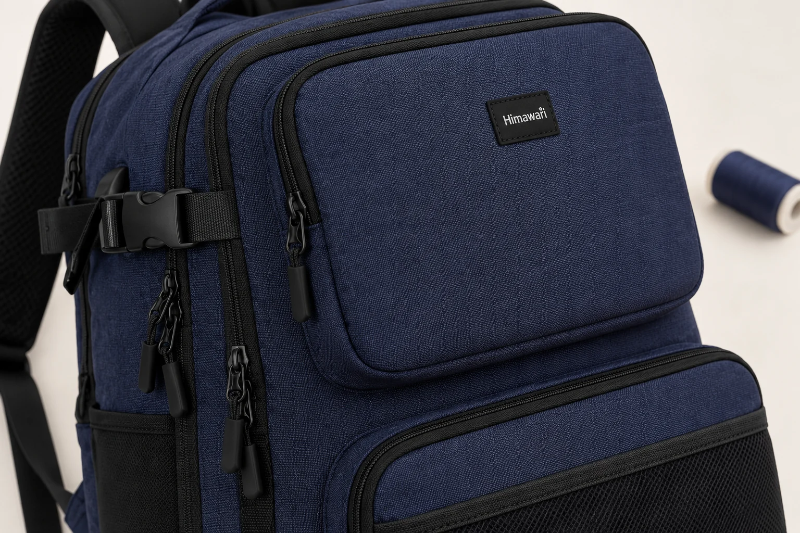

백팩 원단의 데니어, 가방 무게와 같은 숫자일까

백팩을 비교하다 보면 원단 설명의 D와 제품 무게의 g를 만납니다. 둘 다 무게와 관계있는 표기라서 원단의 숫자가 작으면 가방도 그만큼 가벼울 것처럼 느끼기 쉽습니다. 하지만 무엇을 얼마만큼 놓고 잰 값인지가 다릅니다. 데니어를 읽을 때에는 가방 한 개에서 잠시 눈을 떼고 그 가방에 쓰는 실을 떠올려야 합니다.
히마와리 No.2301 네이비의 제품 정보에는 무게 1100g, 외부 크기 가로 28 × 세로 42 × 폭 17cm가 적혀 있습니다. 소재는 겉감과 안감 모두 폴리에스터입니다. 데니어 수치는 기재되어 있지 않습니다. 이 모델에서 확인된 1100g과 소재 이름을 출발점으로, 다른 원단 설명에서 만날 법한 단위를 구분해 보겠습니다. 아래에 나오는 300D와 600D는 단위를 설명하기 위한 예시이며 No.2301의 원단 사양이 아닙니다.

9,000m로 길이를 맞춘 실의 무게
데니어는 실의 길이당 질량을 나타내는 단위입니다. 섬유 기계 제조사 STOLL의 실 굵기 단위 환산표는 데니어를 9,000m당 그램 수로 설명합니다. 600D라면 실 9,000m의 질량이 600g인 셈입니다. 길이를 일정하게 정해 놓고 실이 얼마나 무거운지 읽는 방식입니다.
같은 정의로 300D를 읽으면 실 9,000m가 300g입니다. 이 예에서 600D 실은 같은 길이의 300D 실보다 질량이 두 배입니다. 여기까지는 실 두 종류를 비교한 계산입니다. 그 실로 만든 백팩의 무게가 두 배인지는 아직 계산하지 않았습니다. 가방에 들어간 실의 총길이도, 나머지 부품의 무게도 이 숫자에 없기 때문입니다.
가상의 300D 실 18,000m는 600g으로, 600D 실 9,000m와 질량이 같습니다. 낮은 데니어라도 사용한 길이가 늘면 총질량은 같아집니다. 가방 크기까지 맞춘 비교는 아닙니다.
원단이 600D라고 소개돼도 가방 한 개에 실 9,000m를 썼다는 뜻은 아닙니다. 기준 길이는 단위를 정하기 위한 약속입니다. 상품 한 개에 들어간 양과 혼동하면 600D 백팩은 600g일 것이라는 잘못된 답이 나옵니다. D 뒤에 숨어 있는 길이를 함께 읽으면 제품 무게의 g와 비교하는 위치가 달라집니다.
1100g에는 완성된 가방이 놓입니다
No.2301의 무게 항목에서 읽는 대상은 가방입니다. 원단만 따로 떼어 잰 수치로 안내된 것이 아닙니다. 백팩에는 겉감과 안감 외에도 지퍼, 끈, 연결 부품처럼 서로 다른 부분이 들어갑니다. 완성품의 무게 하나에서 원단에 해당하는 몫만 골라낼 수는 없습니다. 각 부분을 분리해 잰 자료가 없는 상태에서는 어느 부위 때문에 무거운지도 정하기 어렵습니다.
가령 같은 600D 원단으로 크기와 구성이 다른 백팩 두 개를 만든다고 가정해 보겠습니다. 넓은 몸판을 쓰는 쪽과 여러 겹의 포켓을 덧대는 쪽은 필요한 원단의 양부터 따로 계산하게 됩니다. 지퍼와 끈 구성도 다르면 완성품 무게를 비교할 조건이 더 늘어납니다. 같은 D가 적혔다고 두 가방의 중량도 같다고 볼 근거는 없습니다.
거꾸로도 계산되지 않습니다. No.2301의 1100g을 알고 있어도 실의 데니어는 알아낼 수 없습니다. 1100이라는 숫자 뒤에 D를 붙이거나 제품 무게를 외부 크기로 나누어 원단 사양을 채우는 방식은 측정 대상을 바꿉니다. 가방의 무게는 이미 확인한 값으로 두고 실에 관한 미기재 항목은 별도로 남겨 둡니다.
g/m²가 나오면 면적을 펼쳐 봅니다
원단 설명에서 g/m²라는 표기를 만날 수도 있습니다. 원단 1m²의 질량을 그램으로 적는 단위입니다. 9,000m라는 실의 길이를 기준으로 삼는 데니어와 달리, 여기서는 펼친 원단의 면적이 기준입니다. 실의 선밀도와 원단의 면적당 질량은 같은 칸에 옮겨 적을 수 없는 정보입니다.
단위를 읽는 예로 원단이 200g/m²라고 가정하면, 그 원단 1m²는 200g이고 2m²는 400g입니다. 이 숫자도 No.2301의 사양과 관계없는 계산 예시입니다. 실제 백팩에서 원단 몫의 무게를 구하려면 어떤 원단을 얼마나 썼는지 알아야 합니다. 겉감과 안감이 같은 섬유 이름으로 적혀 있어도 면적당 질량까지 같다고 채워 넣지는 않습니다.
같은 예시 원단을 작은 조각으로 잘라 잰다면 조각의 면적도 함께 적어야 합니다. 손바닥만 한 천의 무게를 그대로 g/m² 항목에 넣으면 1m² 기준이 사라집니다. 데니어에서도 기준 길이를 생략할 수 없듯, 단위에 붙은 면적은 숫자를 해석할 조건으로 남습니다.
가방의 바깥 가로와 세로를 곱한 넓이는 재단에 쓴 원단 전체의 넓이와 다릅니다. 몸판은 앞뒤와 옆면으로 이어지고 포켓과 안감도 별도로 들어갑니다. 봉제할 때 겹치는 부분도 남습니다. No.2301의 외부 치수는 바깥 규모를 읽는 데 쓸 수 있지만, 겉감의 사용량이나 g/m²를 역산할 재단 자료는 아닙니다.

숫자가 커져도 남아 있는 조건
데니어를 실의 굵기 설명으로 접하면 숫자가 큰 쪽의 원단이 언제나 두껍고 튼튼하다고 생각하기 쉽습니다. 다만 데니어의 정의는 같은 길이의 실이 얼마나 무거운지만 알려줍니다. STOLL의 환산 안내도 섬유에 따라 실이 차지하는 부피가 달라질 수 있음을 덧붙입니다. 길이당 질량 하나를 원단 두께의 실측값으로 바꿀 수는 없습니다.
마찰이나 찢어짐에 견디는 정도가 궁금하다면 그 성질을 확인한 자료가 필요합니다. 실의 재료와 짜임 등 다른 조건을 지운 채 300D와 600D만 나란히 놓으면 완성된 원단의 성능 순위를 매기기 어렵습니다. 데니어가 두 배이므로 수명도 두 배라는 식의 환산식은 이 단위에 없습니다. 사진에서 결이 굵어 보이는지와 제품에 적힌 D도 구별해서 봅니다.
겉감과 안감이 모두 폴리에스터라는 No.2301의 표기 역시 섬유의 이름을 알려줍니다. 그 이름에 데니어나 원단 두께가 함께 들어 있지는 않습니다. 폴리에스터라는 말에서 특정 D를 유추하거나, 반듯한 가방 모양을 보고 높은 D를 썼다고 추정할 수 없습니다. 확인된 소재 이름은 그대로 읽되 숫자를 덧붙이지 않습니다.
비교 메모에 남길 질문은 짧아집니다
완성된 가방의 무게를 비교하고 싶다면 제품 중량 항목을 찾습니다. 실의 데니어가 구매 조건이라면 해당 모델의 어느 원단을 말하는지 함께 확인합니다. 겉감에 붙은 설명인지 안감까지 포함하는지도 읽어야 합니다. 600D라는 글자만 떼어 메모하면 나중에 다른 부위의 표기와 뒤섞일 수 있습니다.
No.2301에 문의한다면 겉감 폴리에스터의 데니어가 별도로 안내되는지 물을 수 있습니다. 답을 받기 전까지는 무게 1100g과 겉감·안감 폴리에스터만 확인된 정보로 남습니다. 원단의 D를 알아도 완성품 중량 항목을 지울 이유는 없습니다. 실을 기준으로 한 숫자와 가방 한 개를 기준으로 한 숫자를 각각 읽으면, 어느 쪽 정보를 더 찾아야 하는지도 구체적으로 정해집니다.